/math-762c0f38c71ffa6e93f0a1daab55ab04.png "Y_i") sind eindeutige Werte der Spaltenvariable in aufsteigender Reihenfolge, d.h. 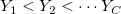
sind eindeutige Werte der Spaltenvariable in aufsteigender Reihenfolge, d.h. 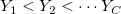/math-865c0c0b4ab0e063e5caa3387c1a8741.png "i") ten Zeile
ten Zeile/math-363b122c528f54df4a0446b6bab05515.png "j") ten Spalte
ten SpalteInhalt |
Kreuztabellen werden auch als Kontingenztabellen bezeichnet. Dieses Hilfsmittel wird verwendet, um das Vorhandensein bzw. die Stärke der Assoziation zwischen Variablen zu untersuchen.
Definieren
sind eindeutige Werte der Spaltenvariable in aufsteigender Reihenfolge, d.h. 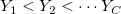ten Zeileten Spalte| Statistik | Formel und Erklärung |
|---|---|
| Anzahl | |
| Erwartete Anzahl | 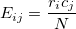 |
| Prozent Zeile | 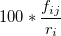 |
| Prozent Spalte | 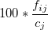 |
| Prozent gesamt | 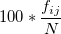 |
| Residuum | 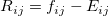 |
| Std. Residuum | 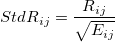 |
| Kor. Residuum | 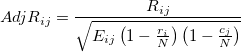 |
| Statistik | Formel und Erklärung | Freiheitsgrade |
|---|---|---|
| Pearsons Chi-Quadrat | 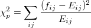 | 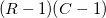 |
| Likelihood-Verhältnis | 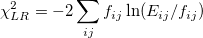 | |
| Lineare Assoziation | 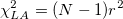, wobei /math-4b43b0aee35624cd95b910189b3dc231.png "r") der Korrelationskoeffizient nach Pearson ist. der Korrelationskoeffizient nach Pearson ist. |
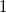 |
| Kontinuitätskorrektur | 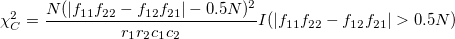0.5N)" alt="\chi_C^2 = \frac{N(|f_{11}f_{22}-f_{12}f_{21}|-0.5N)^2}{r_1r_2c_1c_2} I(|f_{11}f_{22}-f_{12}f_{21}|>0.5N)" class="tex"/>, das nur für 2 x 2-Tabellen berechnet wird. |
Dieser Test ist nützlich, wenn eine erwartete Zellenanzahl gering ist (weniger als 5). Er wird nur für 2 x 2-Tabellen berechnet. Angenommen, Sie haben folgende Tabelle:
| 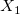 | 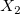 | Teilsumme/Summe | |
|---|---|---|---|
| 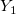 | /math-6c773b2b7798e5713845e475d0c4b4c7.png "n_1") |
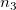 | 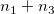 |
| 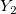 | /math-e501ae2ad90dc374410a774da21c5739.png "n_2") |
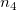 | 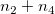 |
| Teilsumme/Summe | 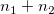 | 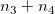 | /math-8d9c307cb7f3c4a32822a51922d1ceaa.png "N") |
Unter der Nullhypothese (Unabhängigkeit) ist die Anzahl der ersten Zelle 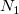 eine hypergeometrische Verteilung mit einer Wahrscheinlichkeit gegeben mit
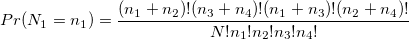, 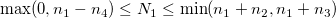.
Das Signifikanzniveau des einseitigen Tests wird berechnet mit
Die zweiseitige Signifikanz ist
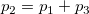
wobei
Definieren
ten Zeileten Spalte| Statistik | Formel und Erklärung | Standardfehler | |
|---|---|---|---|
| Phi-Koeffizient | 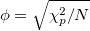, das nicht für 2 x 2-Tabellen berechnet wird. Für eine 2 x 2-Tabelle ist er gleich Der Wert reicht von 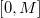, wobei , |
||
| Cramérs V | |||
| Kontingenzkoeffizient | |||
| Gamma | |||
| Kendall | Tau-b | ||
| Tau-c | , wobei | ||
| Somers D | CR | ||
| RC | |||
| Symmetrisch | |||
| Lambda | CR | , wobei die größte Anzahl in der i-ten Zeile ist und die größte Spaltenteilsumme. | , wobei der Spaltenindex von ist und |
| RC | , wobei die größte Anzahl in der j-ten Spalte ist und |
, wobei der Zeilenindex von ist und | |
| Symmetrisch | wobei , , und . | ||
| Unsicherheit | CR | , wobei und und | , wobei |
| RC | |||
| Symmetrisch | |||
Diese Tabelle wird nur berechnet, wenn zwei Bedingungen erfüllt sind: (1) quadratische Tabelle, d.h. , und (2) die Zeilenvariable und die Spaltenvariable die gleichen Werte haben.
Die Kappa-Statistik wird berechnet mit:
Der Standardfehler wird geschätzt mit:
wobei , ,
und .
Der entsprechende asymptotische Standardfehler unter der Nullhypothese ist gegeben mit
Eine weitere verwandte Statistik ist Bowker, die verwendet wird, um für alle Paare zu testen. Wenn 2" alt="R>2" class="tex"/>, wird die Statistik berechnet als
Für größere Samples ist /math-b0d8913d4dfb85c2325c0773ff52ae98.png "Bo") die asymptotische Chi-Quadrat-Verteilung mit dem Freiheitsgrad .
die asymptotische Chi-Quadrat-Verteilung mit dem Freiheitsgrad .
Beachten Sie, dass Bowkers Test für 2 x 2-Tabellen gleich McNemars Test ist. Daher wird hier nur Bowkers Test gezeigt.
Diese Statistik wird nur für 2 x 2-Tabellen berechnet.
Das Quotenverhältnis wird berechnet mit
Die relativen Risiken sind gegeben mit
Definieren
Die Mantel-Haenszel-Statistik ist gegeben mit
wobei sgn die Vorzeichenfunktion 0)-I(x<0)+0*I(x=0)" alt="sgn(x) = I(x>0)-I(x<0)+0*I(x=0)" class="tex"/> ist.
Die Breslow-Day-Statistik ist
wobei .
Tarones Statistik ist
wobei .
Für eine 2×2×K-Tabelle ist das Quotenverhältnis beim k-ten Layer . Angenommen, dass das wahre allgemeine Quotenverhältnis existiert, das lautet, dann ist Mantel-Haenszels Schätzer des allgemeinen Quotenverhältnisses
/math-488db329f6cab4e8b965215f34861f44.png "\hat OR_{MH}=\frac{\sum_{k=1}^{K}\frac{f_{11k} f_{22k}}{n_{k}}}{\sum_{k=1}^{K}\frac{f_{12k} f_{21k}}{n_{k}}}")
Die asymptotische Varianz für ist:
![\hat Var[ln(\hat OR_{MH})]=\frac{\sum_{k=1}^{K}\frac{(f_{11k}+f_{22k})f_{11k} f_{22k}}{n_{k}^2}}{2\sum_{k=1}^{K}\frac{f_{11k} f_{22k}}{n_{k}}}+\frac{\sum_{k=1}^{K}\frac{(f_{11k}+f_{22k})f_{12k} f_{21k}+(f_{12k}+f_{21k})f_{11k} f_{22k}}{n_{k}^2}}{2\sum_{k=1}^{K}\frac{f_{11k} f_{22k}}{n_{k}}\sum_{k=1}^{K}\frac{f_{12k} f_{21k}}{n_{k}}}+\frac{\sum_{k=1}^{K}\frac{(f_{12k}+f_{21k})f_{12k} f_{21k}}{n_{k}^2}}{2\sum_{k=1}^{K}\frac{f_{12k} f_{21k}}{n_{k}}}](../images/Algorithm(CrossTabs)/math-fe6d99fcba77f28d2e62c52d30d014f4.png "\hat Var[ln(\hat OR_{MH})]=\frac{\sum_{k=1}^{K}\frac{(f_{11k}+f_{22k})f_{11k} f_{22k}}{n_{k}^2}}{2\sum_{k=1}^{K}\frac{f_{11k} f_{22k}}{n_{k}}}+\frac{\sum_{k=1}^{K}\frac{(f_{11k}+f_{22k})f_{12k} f_{21k}+(f_{12k}+f_{21k})f_{11k} f_{22k}}{n_{k}^2}}{2\sum_{k=1}^{K}\frac{f_{11k} f_{22k}}{n_{k}}\sum_{k=1}^{K}\frac{f_{12k} f_{21k}}{n_{k}}}+\frac{\sum_{k=1}^{K}\frac{(f_{12k}+f_{21k})f_{12k} f_{21k}}{n_{k}^2}}{2\sum_{k=1}^{K}\frac{f_{12k} f_{21k}}{n_{k}}}")
Die untere Konfidenzgrenze (UEG) und obere Konfidenzgrenze (OEG) für sind:
/math-2db95e8e1a9267b7a1188556b2013b33.png "l") der Index der Spaltenteilsumme für .
der Index der Spaltenteilsumme für ./math-ad2fdd8ee6e6b23d512c21f9be0c1117.png "r_m") die größte Zeilenteilsumme.
die größte Zeilenteilsumme./math-8ce4b16b22b58894aa86c421e8759df3.png "k") der Index der Zeilenteilsumme für
der Index der Zeilenteilsumme für